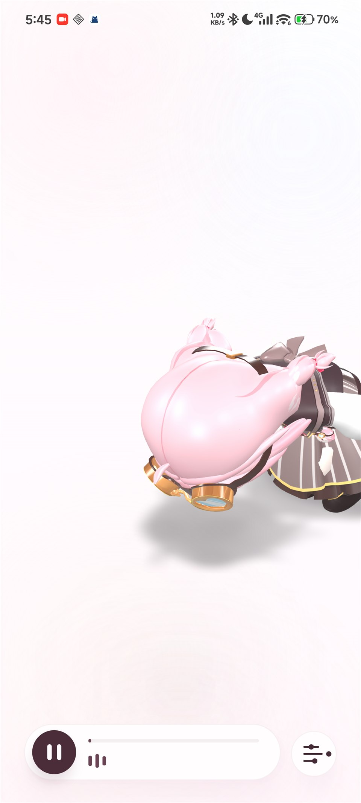

Offline MMD Stage for Android
把塔菲舞台 装进手机。
唐氏驾到 现在已经是一套完整链路：本地 GLB、内置
model-viewer、可签名的 release APK，再加一个能直接部署到
GitHub Pages 的炫酷发布页。
轻粉色大留白、玻璃层导航、悬浮设备陈列，还有能一键复制的发版命令。
- Expo + React Native
- WebView + vendored model-viewer
- GLB + local audio + release APK

Offline GLB
Local Music
Release APK
GitHub Pages
Glass Navigation
Hero Screens
One Command Build
Offline GLB
Local Music
Release APK
GitHub Pages
Glass Navigation
Apple-Inspired Landing Page
用大段留白、玻璃层和悬浮设备，让页面更像发布会。
首屏不是堆功能，而是直接把“作品感”推到前面。
这一版 landing page 会优先展示气质，再讲技术细节。设备陈列、淡粉光晕、悬浮说明卡和缓慢滚动 reveal 全部为了同一件事服务：让人第一眼就觉得这不是 demo。
3
Hero Screens
2
Copy Cards
1
Deploy Workflow
轻粉、雾面玻璃、边缘高光。
配色整体控制在非常浅的粉白区间，再用少量蓝白冷光打出层次，尽量靠质感取胜，而不是靠高饱和度吵闹取胜。
既能发体验包，也能切正式签名。
你可以直接打出 release APK 做分发测试；当 keystore 准备好以后，只要换成正式签名变量，就能继续走上架链路。
Gallery
Stage Portrait
Offline Runtime
GLB、本地音频、内置脚本，全部跟着 APK 走。
没有外链 viewer，没有运行时 CDN 依赖。断网打开，舞台也还是完整的。
Launch Feel
页面像品牌站，不像仓库说明。
保留命令、链接和构建信息，但把它们都包进更轻盈的卡片和滚动结构里。
Release APK
现在就能打出 release 包，没证书也能先做体验分发。
powershell -ExecutionPolicy Bypass -File .\scripts\build-release-apk.ps1默认支持 debug keystore fallback，适合真机体验包；准备好正式证书后可以无缝切换。
构建产物位置
android/app/build/outputs/apk/release/app-release.apk仓库里已经实测打出过一份可安装的 app-release.apk。
$env:NAIWA_UPLOAD_STORE_FILE = "C:\path\to\upload-keystore.jks"
$env:NAIWA_UPLOAD_STORE_PASSWORD = "your-store-password"
$env:NAIWA_UPLOAD_KEY_ALIAS = "your-key-alias"
$env:NAIWA_UPLOAD_KEY_PASSWORD = "your-key-password"GitHub Pages
docs/ 站点和 Pages 工作流都已经准备好，推上 GitHub 就能发。
仓库内已包含
docs/index.html静态 landing pagedocs/styles.css视觉与响应式布局docs/script.jsreveal、复制与视差动效docs/.nojekyll与 GitHub Pages workflow
发布步骤
- 把仓库推到 GitHub。
- 在仓库里启用 GitHub Pages / Actions。
- 工作流会自动把
docs/发布成站点。
默认工作流监听 master 分支推送，也支持手动触发。
站点地址形态
https://<github-username>.github.io/<repo-name>/如果你之后告诉我仓库名，我还可以继续把页面里的下载链接和分享文案都替你补成正式版本。